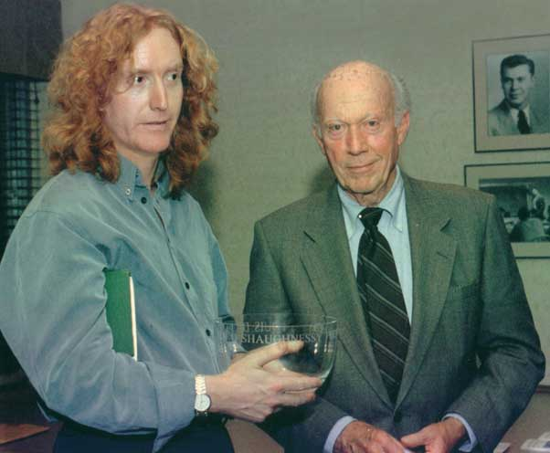

Louis de Paor was born
in Cork /
Corcach
in 1961. The name means literally
‘a marshy place
’
and is the origin
of
the term
‘bog
Irish
’.
His subtle poems deny the insult of that term.
His career as a poet began in the late seventies at University College
Cork, where he studied for his BA in Irish Language and Literature
while publishing poems and reviews in Irish-language journals. He
has been involved with
the contemporary renaissance in Irish language poetry since 1980 and
edited the Irish language poetry journal
Innti.
In 1986 he was awarded a PhD from the National University of Ireland
for his thesis on the fiction of Máirtin Ó
Cadhaín, one of the
finest prose writers of Irish this century, and in the same
year he received the Poetry Ireland Prize for his review of poetry by
Nuala Ní Dhomhnaill. Both
his first collections of poems,
Próca
Solais is Luatha (1988) and
30
Dán (1992), and also the Gaelic only version of
Cork & Other
Poems,
won the Seán Ó Ríordáin
Prize, the premier award in Irish
poetry. After teaching at universities in Ireland he lived in
Australia for ten years from 1987 and worked as a lecturer at the
University of Sydney and as presenter and producer of an Irish radio
programme in Melbourne. He has received several grants from both the
Australia Council and the Irish Arts Council. His Irish publications
also include
30 Dán (1992)
Corcach
agus Dánta Eile
(1999) and
Agus Rud Eile De (2002).
He has published a critical study of Máirtín
Ó Cadhain and has
co-edited an
anthology of twentieth century poetry in Irish with Seán
Ó Tuama. His
first
collection published while in Australia,
Aimsir
Bhreicneach / Freckled Weather (Leros Press, in
association
with
the Centre for Celtic Studies, University of Sydney, 1993), was
shortlisted for the Dinny
O'Hearn Award for Literary Translation. His second,
Gobán Cré
is Cloth/Sentences of Earth
& Stone, saw him emerge as one of Ireland's
foremost poets.
Corcach
aġus Dánta Eile/Cork
& Other Poems
was
his third collection of Irish poetry accompanied by his English
translations. Louis de Paor now lives in Galway, Ireland, with his wife
and five children and has been director of the Centre for Irish Studies
at the National University of Ireland, Galway. He won the Lawrence
O’Shaughnessy
Award
in 2000, the leading American award for Irish
poets, the first poet in Gaelic to achieve that
distinction. Helen Fulton has written his work is ‘an
experience of
humanity that challenges the imperialism of language and crosses the
boundaries of difference’.

Photo: de Paor receives the fourth Lawrence M. O'Shaughnessy
Award
Interview
Poet’s
words recall a homeland
far away
(From
Melbourne
Yarra Leader, 27 May 1996)
Louis de Paor is a performcr. But the Irish poet shares the stories of
his homeland not only to entertain, but to remind himself of his
heritage and true self.
‘Once you. are away from your family and place of origin, you
need to
recreate your own memories and history,’ he said.
‘Unless you keep
telling those stories about your parents and grandparents you will
literally not find yourself, find out who you are.’
Mr de Paor migrated to Australia nine years ago and carved a niche for
himself in the Melbourne poetry scene. He said he honored his roots by
writing poems in Irish - the first official language of Ireland which
is almost extinct.
‘There was a famine in the 1840s which virtually wiped out
the class of
people who spoke Irish,’ Mr de Paor said. ‘I have
always found myself
enormously attracted to the language. In some ways I could access parts
of my personality or imagination that were unavailahle to me in
English.’
Mr de Paor will recite his poetry at the Universal Theatre this month
at the second World of Music concert series. He will perform alongside
the Giorgis Xylouris Ensemble on June 6. The show is based on
multiculturalism and dispossession.
‘Multiculturalism is an absolute Australian
phenomenon,’ Mr de Paor
said. ‘In Australia people, come together naturally. These
cultures
otherwise would not mix.’
Back to top